ITSC Meeting 2017-01
2017 - Year in ReviewRoad Map 2018+
Created by IT Department
AGENDA


PROJECTS 2017
New CustomApplication/Enhancement- ERP New EPAS System
- ERP New Expense Management Module
- ERP New Travel Authorization Request
- ERP New Simplified Incident Reporting
- ERP New IDEA Suggestion System
- ERP New 12-hour Shift Rotation
- ERP New VAT Applications Support
- ERP New Housing Occupancy Monitor
- ERP Elect. Voucher Approval w/image
- ERP CBQ Host-To-Host File Transfers
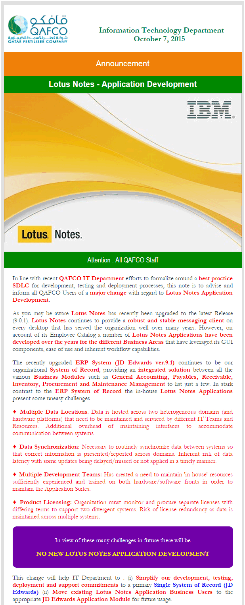
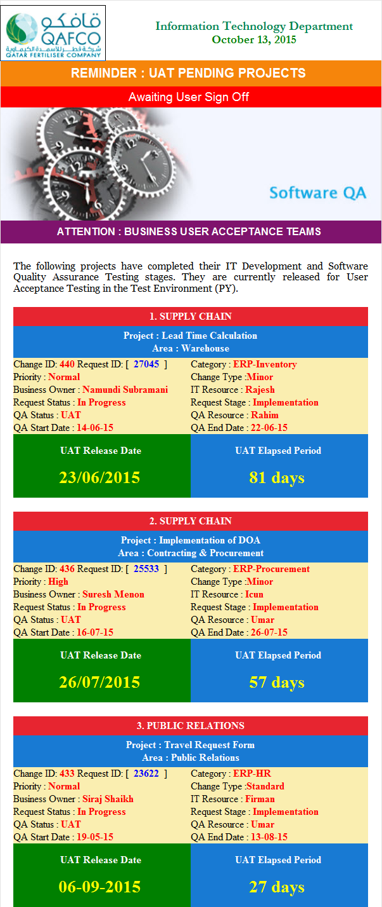
PROJECTS 2017
New CustomApplication/Enhancement- ERP Clearance Form Automation
- ERP Safety Work Permit Revamp
- ERP New Shutdown Material Monitoring
- ERP New Periodic Maintenance Forecasting
- ERP New Streamline Maint. Planning Process
- New PIMS Unidirectional Data Xfer Architecture
- New Document Management System/Ctrl/HR/Cor/PMP
PROJECTS 2017
New CustomERP Deployment Metrics| Business Area | Project |
|---|---|
| Finance/AP/AR/GL | 23 |
| Contracts & Procurement | 11 |
| Warehouse | 8 |
| HR | 26 |
| Maintenance | 17 |
| Production | 3 |
| Total | 88 |
PROJECTS 2017
New CustomERP Platform Metrics| Environment | Projects | Objects |
|---|---|---|
| [PD] Production | 137 | 4371 |
| [PY] Test QA/UAT | 25 | 1190 |
| [DV] Development | 14 | 203 |
| Total | 176 | 5764 |
PROJECTS 2017
ERP JDE vs SAP Assessment Study- Comparison Study : JDE vs SAP
- Tendered. Completed by KPIT
- 3 Reports : Business
- Business Requirements
- Technical Solutions Document
- Management Executive Report
- Management Presentation
- Executive Decision
PROJECTS 2017
SDLCSoftware Development Life Cycle
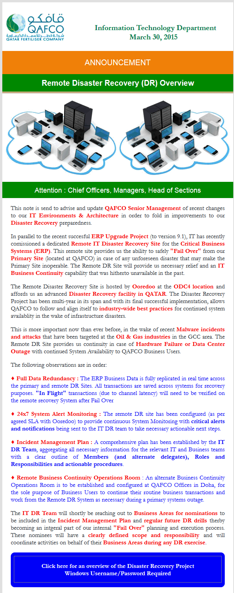
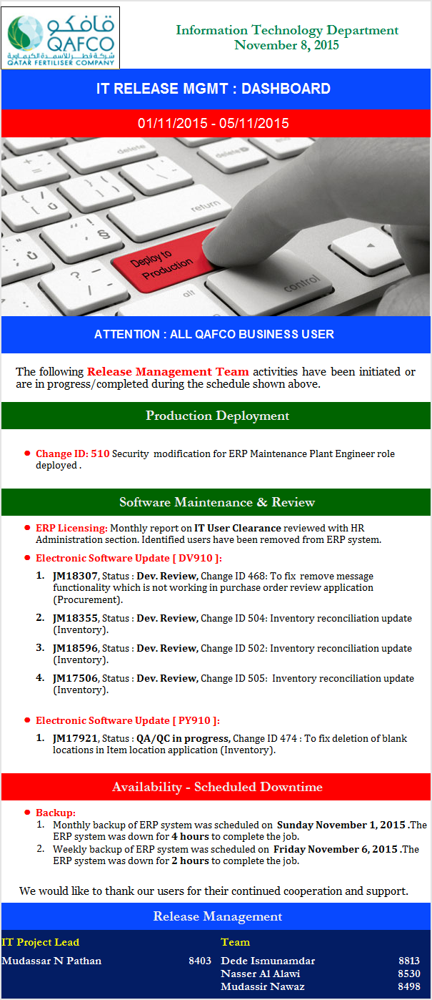
CYBER SECURITY
ISO 27001 Assessment Initiative- Vulerabilties & Risks / Policies & Procedures
- Risk Treatment Plan
- ISO Charter / ISO Team Meeting
- ISO Certification Assesment (Quality)
- Employee CS Awareness
- Disaster Recovery (DR) Failover Drills
- Simulation Failure / Held 2 times per year
- Business and IT Team Roles & responsibility
- Results & Lessons Learned
- October : Cyber Security Month Campaign
- QAFCO Users IT Learning Library (QUILL)
CYBER SECURITY
STAR 5 National Cyber Security Drill- MOTC / ICT QATAR Organized
- Caters : Oil Up/Down Stream/ Fin./ Med./ Edu.
- 3rd Year for participation
- Separate Well defined exercises
- Table Top : Crises Management
- Technical : Hosted Embeded Server
- Post Exercise Reporting
- Anonymized Scorecard
- Recommendations
ROAD MAP 2018
QAFCO Dashboard 1.0 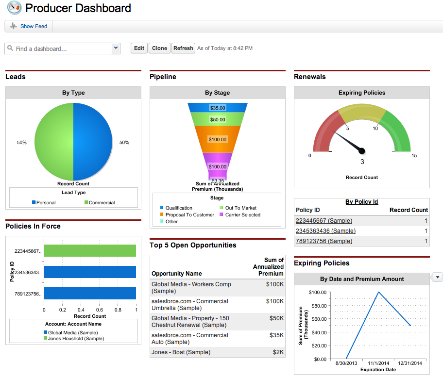 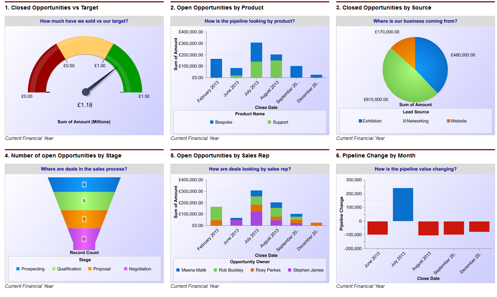 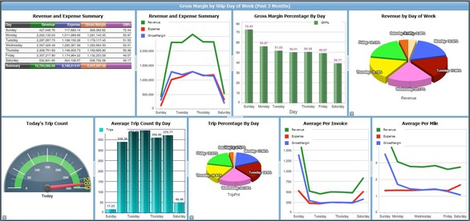ROAD MAP 2018
QAFCO Dashboard 2.0 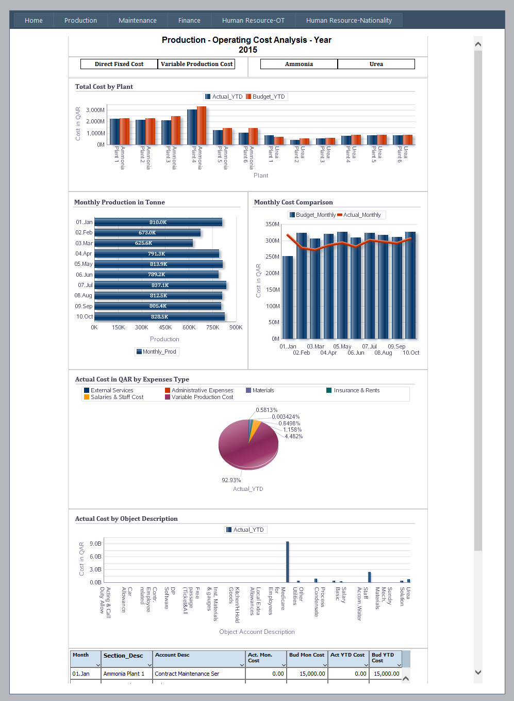 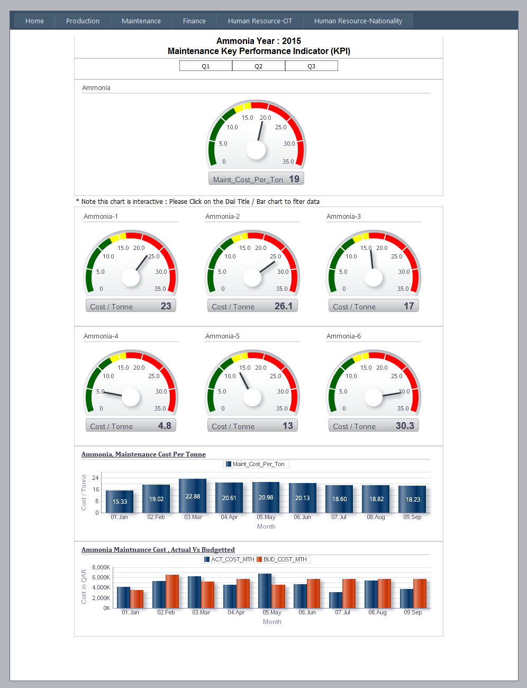 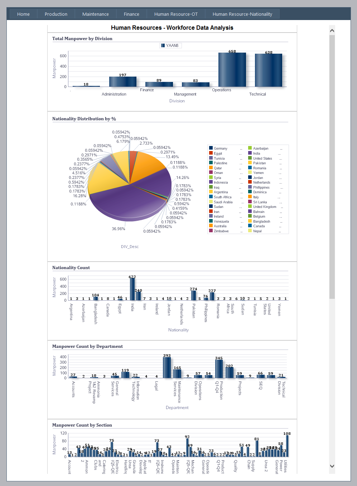ROAD MAP 2018+
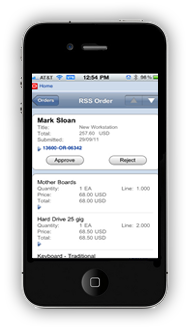ROAD MAP 2018+
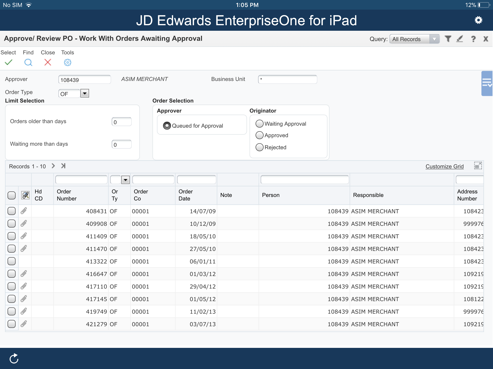
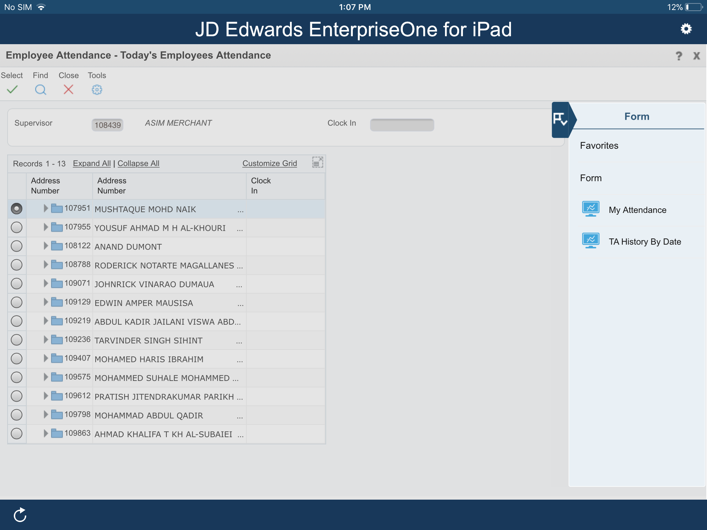
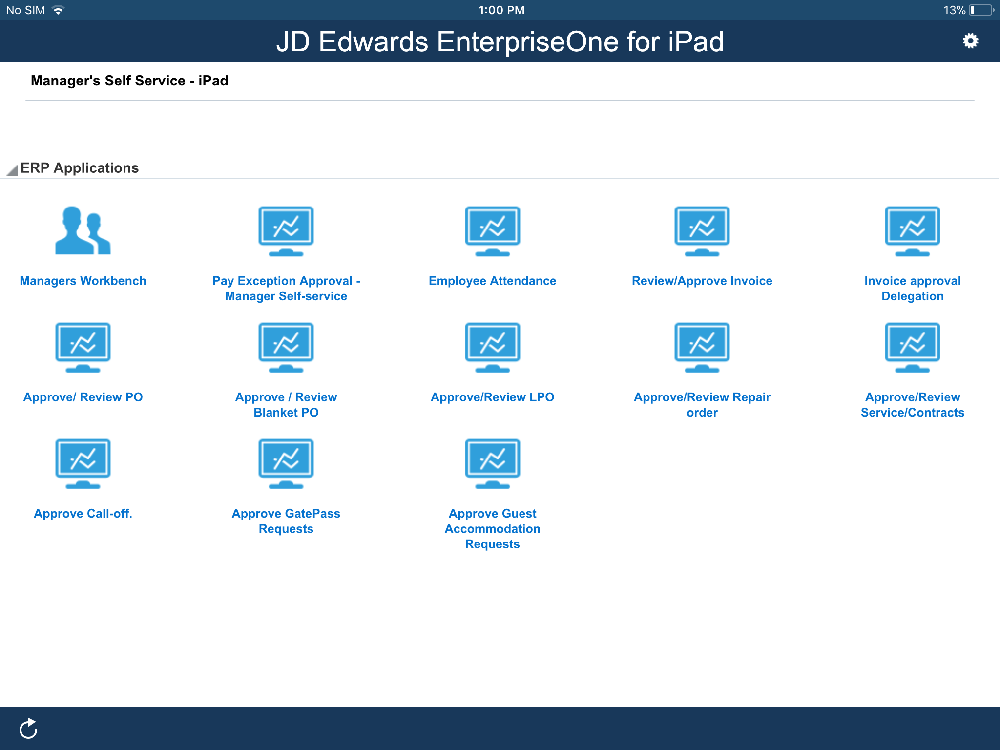
ROAD MAP 2018+
Q & A
Any questions ?